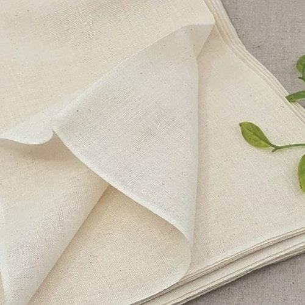
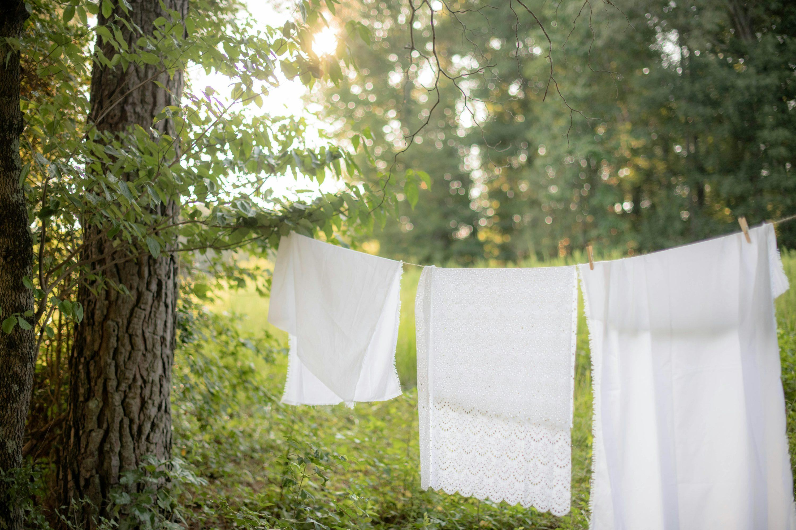

무형광 No Optical Brightener
피부 트러블과 알레르기를 유발하는 형광증백제 0.0% 검출
01. Brand Story
꽃이 피어나는 뜰에서 영감을 얻어,
매일의 작은 순간에 특별한 감각을 더합니다.
매일 사용하는 수건은 우리 일상에서 가장 익숙한 물건 중 하나입니다. 하지만 익숙하다는 이유로 그 안에 담긴 소재의 가치와 아름다움을 지나치고 있지는 않을까요?
플로뜰리에는 이러한 작은 질문에서 시작되었습니다. 꽃에서 발견한 아름다움, 뜰에서 느끼는 자연의 여유, 아틀리에의 섬세한 감각을 담아 평범한 일상에 새로운 가치를 더하고자 합니다.
단순히 물기를 닦는 수건을 넘어, 매일 손이 닿는 순간마저 소중한 경험이 되기를 바랍니다.
02. Brand Philosophy
특별한 순간이 아니더라도 일상에서 자연과 예술의 아름다움을 경험할 수 있도록 합니다.

매일 피부에 닿는 제품인 만큼 소재와 사용 경험을 세심하게 생각합니다.

자연에서 얻은 영감을 제품에 담는 것을 넘어, 제작 과정에서도 환경에 미치는 영향을 고민합니다.
03. Our Process
원단에 묻어있는 옥수수 전분 풀기와 자연 불순물을 제거하기 위해 집에서 냄비에 삶고 말려야 했던 번거로움을 공방의 정성 어린 4단계 전통 공정으로 완벽히 해결했습니다.
강화도 50℃ 청정 지하수에 12시간 동안 담가, 전분이 고온에서 굳기 전에 부드럽게 수화 팽윤시켜 원단 손상 없이 직조 옥수수 풀기를 자연스럽게 불려냅니다.
전통 무쇠 가마솥 방식으로 100℃ 고온 열탕 삶기를 진행하여 목화 원사의 천연 왁스막을 녹이고, 잔류 전분을 85% 이상 박리·살균합니다.
강화도 청정 암반수로 3차례에 걸친 고압 회전 린스를 거쳐 박리된 전분 찌꺼기를 완전 배출하며, KS K 0210 시험 기준 요오드 전분 반응 ‘불검출’을 달성합니다.
맑은 바람 건조 후 고속 공기 기류의 물리 가공으로 섬유 조직 사이사이에 뽀송한 미세 공기층을 형성하여, 삶을 필요 없는 100% 완제품으로 출고합니다.
Absolute Transparency
화학 가공을 일절 배제하여 연약한 아기 피부와 아토피·초민감 피부도 안심하고 쓸 수 있는 시험성적서 원본을 투명하게 공개합니다.
피부 트러블과 알레르기를 유발하는 형광증백제 0.0% 검출
인위적인 백색을 내기 위한 염소계 화학 표백제 완전 배제
원사 본연의 따스한 자연 아이보리 빛을 그대로 보존
인공 향료와 계면활성제 잔여물이 없는 깨끗한 순면
Evolution of Comfort
소창은 쓸수록 진가를 발휘합니다. 슬라이더를 움직여 50회 세탁 후 촘촘해진 조직감과 부드러운 수축 변화를 확인해 보세요.
0WASHES
신품 규격 · 40 × 80 cm